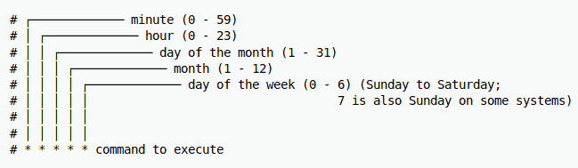

1. PostgreSQL DB Backup und Restore
1.1. Warum überhaupt Backups?
Datenbanken sind einer der wichtigsten Bestandteile verschiedenster Anwendungen, sie speichern
wichtige Informationen, die für den Betrieb unerlässlich sind.
Datenverlust kann schwerwiegende Folgen haben, wie z. B. finanzielle Verluste, verärgerte Kunden, etc.
Daher ist es wichtig, regelmäßige Backups zu erstellen, um die Datenbank vor Datenverlust zu schützen.
1.2. Backup
Die Idee hinter einem SQL Dump ist es, eine Datei mit SQL-Befehlen zu erstellen, die, wenn sie ausgeführt wird,
die Datenbank in den Zustand zurückversetzen, in dem sie sich zum Zeitpunkt des Backups befand.
Typischerweise enthält ein Backup alle oder ausgewählte Daten, Schema und Konfigurationseinstellungen die nötig sind,
um die Datenbank wiederherzustellen.
Hierfür werden Utility Programs wie pg_dump verwendet:
-
pg_dump:
Holt die Daten aus einer Datenbank und schreibt sie in ein Skript oder ein Archiv.
Die Datei repräsentiert den snapshot (Schnappschuss) der Datenbank zur Zeit, an dem der Befehl ausgeführt wird.
Syntax:
pg_dump [option] [dbname] > [output_filename]
Standardmäßig ist das Ausgabeformat von pg_dump ein SQL-Skript.Andere Formate können mit der Option -F angegeben werden.
|
Optionen für pg_dump:
| Option | Beschreibung |
|---|---|
-U, --username=USERNAME |
Gibt den Benutzernamen für die Verbindung zur Datenbank an. |
-h, --host=HOSTNAME |
Gibt den Hostnamen des Servers an, auf dem der PostgreSQL-Server läuft. |
-p, --port=PORT |
Gibt die Portnummer an, auf der der PostgreSQL-Server lauscht. |
-d, --dbname=DBNAME |
Gibt den Namen der Datenbank an, die exportiert werden soll. |
-n, --schema=SCHEMA |
Gibt das Schema oder die Schemata an, die exportiert werden sollen. Mehrere Schemata können durch Kommata getrennt angegeben werden. |
-t, --table=TABLE |
Gibt die Tabelle oder Tabellen an, die exportiert werden sollen. Mehrere Tabellen können durch Kommata getrennt angegeben werden. |
-F, --format=FORMAT |
Gibt das Ausgabeformat an (z. B. plain (p), custom (c), directory (d)). |
-f, --file=FILENAME |
Gibt den Namen der Ausgabedatei an. |
-W, --password |
Erzwingt eine Passwortabfrage für die Verbindung zum PostgreSQL-Server. |
-w, --no-password |
Unterdrückt die Passwortabfrage, wenn das Passwort auf andere Weise bereitgestellt wird (z. B. |
-c, --clean |
Fügt SQL-Befehle hinzu, um die Datenbankobjekte vor dem Import zu löschen. |
-C, --create |
Fügt SQL-Befehle hinzu, um die Datenbank vor dem Import zu erstellen. |
-a, --data-only |
Exportiert nur die Daten, nicht die Schemas. |
-s, --schema-only |
Exportiert nur die Schemas, nicht die Daten. |
-x, --no-privileges |
Schließt Berechtigungen (GRANT/REVOKE-Befehle) aus dem Dump aus. |
-X, --no-owner |
Verhindert den Export von Objektbesitzinformationen (z. B. |
--help |
Zeigt Hilfe und Nutzungsinformationen an. |
Beispiele
pg_dump -U app -h localhost db > backup/customers.sqlpg_dump -U app -h localhost -F t db > backup/customers.tarpg_dump -U app -h localhost -F d -f backup/backupDir db1.3. Restore
Um eine PostgreSQL-Datenbank im Falle eines Datenverlusts wiederherzustellen, benutzt man die Werkzeuge psql oder
pg_restore.
psql wird verwendet, um ein Backup-Skript im SQL-Format auszuführen, während pg_restore andere Formate
(custom, tar, directory) unterstützt.
-
psql:
psql [option] < [backup_filename]
-
pg_restore:
pg_restore [option] [backup_filename]
Optionen:
| Option | Beschreibung |
|---|---|
-U, --username=USERNAME |
Gibt den Benutzernamen für die Verbindung zur Datenbank an. |
-h, --host=HOSTNAME |
Gibt den Hostnamen des Servers an, auf dem der PostgreSQL-Server läuft. |
-p, --port=PORT |
Gibt die Portnummer an, auf der der PostgreSQL-Server lauscht. |
-d, --dbname=DBNAME |
Gibt den Namen der Datenbank an, die exportiert werden soll. |
-t, --table=TABLE |
Gibt die Tabelle oder Tabellen an, die exportiert werden sollen. Mehrere Tabellen können durch Kommata getrennt angegeben werden. |
-v, --verbose |
Gibt detaillierte Informationen über den Wiederherstellungsprozess aus. |
-c, --clean |
Löscht die Datenbankobjekte vor dem Import. |
-C, --create |
Erstellt die Datenbank vor dem Import. |
-e, --exit-on-error |
Beendet den Wiederherstellungsprozess, wenn ein Fehler auftritt. |
-F, --format=FORMAT |
Gibt das Format des Backup-Datei an (z. B. plain (p), custom (c), directory (d), tar (t)). |
-j, --jobs=NUM |
Gibt die Anzahl der gleichzeitig ausgeführten Jobs an. |
-n, --schema=SCHEMA |
Gibt das Schema oder die Schemata an, die wiederhergestellt werden sollen. |
-L, --use-list=FILENAME |
Gibt eine Datei an, die eine Liste der Dateien enthält, die wiederhergestellt werden sollen. |
-t, --tablespace=TABLESPACE |
Gibt den Tablespace an, in dem die Tabellen wiederhergestellt werden sollen. |
-V, --version |
Gibt die Version von |
-?, --help |
Zeigt Hilfe und Nutzungsinformationen an. |
Beispiele
psql -U app -h localhost -d db < backup/customers.sqlpg_restore -U app -h localhost -d db backup/customers.tarpg_restore -U app -h localhost -d db backup/backupDir--
-- PostgreSQL database dump
--
-- Dumped from database version 15.8 (Debian 15.8-1.pgdg120+1)
-- Dumped by pg_dump version 17.2
SET statement_timeout = 0;
SET lock_timeout = 0;
SET idle_in_transaction_session_timeout = 0;
SET transaction_timeout = 0;
SET client_encoding = 'UTF8';
SET standard_conforming_strings = on;
SELECT pg_catalog.set_config('search_path', '', false);
SET check_function_bodies = false;
SET xmloption = content;
SET client_min_messages = warning;
SET row_security = off;
SET default_tablespace = '';
SET default_table_access_method = heap;
--
-- Name: customer; Type: TABLE; Schema: public; Owner: app
--
CREATE TABLE public.customer (
id bigint NOT NULL,
email character varying(255),
name character varying(255)
);
ALTER TABLE public.customer OWNER TO app;
--
-- Name: customer_id_seq; Type: SEQUENCE; Schema: public; Owner: app
--
ALTER TABLE public.customer ALTER COLUMN id ADD GENERATED BY DEFAULT AS IDENTITY (
SEQUENCE NAME public.customer_id_seq
START WITH 1
INCREMENT BY 1
NO MINVALUE
NO MAXVALUE
CACHE 1
);
--
-- Data for Name: customer; Type: TABLE DATA; Schema: public; Owner: app
--
COPY public.customer (id, email, name) FROM stdin;
1 john.doe@example.com Doe John
2 jane.doe@example.com Doe Jane
3 alice.smith@example.com Smith Alice
4 bob.jones@example.com Jones Bob
5 charlie.brown@example.com Brown Charlie
6 emily.clark@example.com Clark Emily
7 michael.king@example.com King Michael
8 sarah.lee@example.com Lee Sarah
9 david.taylor@example.com Taylor David
10 laura.martin@example.com Martin Laura
11 kevin.moore@example.com Moore Kevin
12 lisa.white@example.com White Lisa
13 paul.wilson@example.com Wilson Paul
14 anna.jones@example.com Jones Anna
15 thomas.hall@example.com Hall Thomas
16 karen.young@example.com Young Karen
17 james.scott@example.com Scott James
18 patricia.evans@example.com Evans Patricia
19 robert.adams@example.com Adams Robert
20 barbara.baker@example.com Baker Barbara
\.
--
-- Name: customer_id_seq; Type: SEQUENCE SET; Schema: public; Owner: app
--
SELECT pg_catalog.setval('public.customer_id_seq', 1, false);
--2. Cron jobs
2.1. Was ist das?
Cron-Jobs sind zeitgesteuerte Aufgaben, die auf Unix- oder Linux-Systemen im Hintergrund automatisch ausgeführt werden. Sie werden über den Cron-Dienst verwaltet und können so konfiguriert werden, dass sie Skripte, Befehle oder Programme zu bestimmten Zeitpunkten oder in festgelegten Intervallen ausführen. Die Konfiguration erfolgt üblicherweise über die Crontab-Datei.
2.2. Wie funktionieren Cron jobs?
-
Crontab-Dateien
-
Diese Dateien sind die 'Konfiguration' für Cron-Jobs.
-
Jeder Benutzer hat eine Crontab-Datei, in der die einzelnen Aufgaben definiert werden.
-
-
Cron-Dienst
-
Ein Cron-Daemon läuft die ganze Zeit im Hintergrund und überwacht die Crontab-Dateien aller Benutzer.
-
Dieser Daemon führt die definierten Aufgaben zum gegebenen Zeitplan aus.
-
-
Zeitangaben
-
Die verwendete Zeit von Cron ist die des Systems, auf dem es läuft.
-
Cron überprüft minütlich, ob eine Aufgabe ausgeführt werden muss.
-
-
Ausführung
-
Befehle oder Skripts werden zur festgelegten Zeit oder in festgelegten Intervallen ausgeführt.
-
Die Ausgabe kann man in einer Log-Datei speichern oder per E-Mail versenden, sofern konfiguriert.
-
2.3. Vorteile & Nachteile
Cron-Jobs sind das A&O für die Automatisierung von Aufgaben, jedoch gibt es neben den zahlreichen Vorteilen auch einige Nachteile.
Vorteile
-
Automatisierung
-
Wiederkehrende Aufgaben können ohne manuellen Eingriff erledigt werden.
-
-
Flexibilität
-
Feine Zeitsteuerung für beliebige Zeitpläne.
-
-
Effizienz
-
Spart Zeit und reduziert die Wahrscheinlichkeit von menschlichen Fehlern.
-
-
Einfachheit
-
Minimaler Ressourcenverbrauch und einfache Konfiguration.
-
Nachteile
-
Komplexität bei Fehlern
-
Fehler bei der Konfiguration (z. B. falsche Zeitangaben) sind schwer zu fixen.
-
-
Limitierte Logging-Funktionalität
-
Ohne spezielle Vorkehrungen sind Cron-Jobs schwer zu überwachen.
-
-
Sicherheitsrisiken
-
Unvorsichtige Konfiguration kann Sicherheitslücken öffnen.
-
-
Skalierbarkeit
-
Bei vielen Aufgaben kann die Verwaltung und Überwachung von Cron-Jobs schwierig werden.
-
| Das kleinste Intervall eines Cron Jobs ist 1 Minute |
2.4. Typische Anwendungsfälle
Cron Jobs werden beinahe überall eingesetzt, wo regelmäßige oder zeitgesteuerte Aufgaben anfallen, wie zum Beispiel:
-
Automatisierte Backups
-
Regelmäßiges Sichern von Datenbanken, Dateien oder Servern.
-
-
Systemwartung
-
Aufgaben wie das Leeren von temporären Dateien, das Rotieren von Logs oder das Aktualisieren von Paketen.
-
-
Datenverarbeitung
-
Verarbeitung oder Synchronisierung von Daten wie das Abrufen von APIs, das Erstellen von Log-Daten oder das Generieren von Berichten.
-
-
Benachrichtigungen
-
Versenden von Erinnerungen, Alerts oder Zusammenfassungen.
-
2.5. Cronjob Syntax

Zusätzlich zur Syntax gibt es auch verschiedene Operatoren, die verwendet werden können:
| Operator | Beschreibung |
|---|---|
|
Jeder Wert (z. B. |
|
Mehrere Werte (z. B. |
|
Wertebereich (z. B. 6-12 im Monatsfeld |
|
Schrittweite (z. B. |
|
Letzte/r … (z. B. |
|
Wochentag (z. B. |
|
Operator für einen bestimmten Tag im Monat (z. B. |
|
Keine spezifischen Werte für Tag des Monats oder Tag der Woche |
3. Cronjobs und PostgreSQL
3.1. Warum automatisierte Backups?
Eine oder mehrere Datenbanken manuell zu sichern, ist zeitaufwändig und fehleranfällig.
Automatisierte Backups sind eine effiziente Möglichkeit, regelmäßig Backups zu
erstellen, ohne dass manuell eingegriffen werden muss.
3.2. Backup-Strategien
Es gibt verschiedene Backup-Strategien, die je nach Anforderungen und Umgebung eingesetzt werden können:
-
Vollständiges Backup
-
Sichert die gesamte Datenbank.
-
-
Inkrementelles Backup
-
Sichert nur die Änderungen seit dem letzten Backup.
-
-
Differenzielles Backup
-
Sichert nur die Änderungen seit dem letzten vollständigen Backup.
-
4. Cronjob Beispiel in Kubernetes
apiVersion: apps/v1
kind: Deployment
metadata:
name: dbapp
spec:
replicas: 1
selector:
matchLabels:
app: dbapp
template:
metadata:
labels:
app: dbapp
spec:
containers:
- name: appsrv
image: ghcr.io/oliver-420/dbapp:latest
imagePullPolicy: Always
ports:
- containerPort: 8080
---
apiVersion: v1
kind: Service
metadata:
name: quarkus-service
spec:
ports:
- port: 8080
targetPort: 8080
selector:
app: dbappapiVersion: v1
kind: PersistentVolumeClaim
metadata:
name: postgres-pvc
spec:
accessModes:
- ReadWriteOnce
resources:
requests:
storage: 1Gi
---
apiVersion: v1
kind: Service
metadata:
name: postgresql-service
spec:
ports:
- port: 5432
selector:
app: postgresql
---
apiVersion: apps/v1
kind: Deployment
metadata:
name: postgresql
spec:
selector:
matchLabels:
app: postgresql
template:
metadata:
labels:
app: postgresql
spec:
containers:
- name: postgresql
image: postgres:15
ports:
- containerPort: 5432
env:
- name: POSTGRES_DB
value: db
- name: POSTGRES_USER
value: app
- name: POSTGRES_PASSWORD
value: app
volumeMounts:
- mountPath: /var/lib/postgresql/data
name: postgres-storage
lifecycle:
postStart:
exec:
command:
- "/bin/sh"
- "-c"
- "apt-get update && apt-get install -y nano"
volumes:
- name: postgres-storage
persistentVolumeClaim:
claimName: postgres-pvc
---
apiVersion: batch/v1
kind: CronJob
metadata:
name: postgres-backup-cronjob
spec:
schedule: "*/1 * * * *"
successfulJobsHistoryLimit: 3
failedJobsHistoryLimit: 1
jobTemplate:
spec:
template:
spec:
restartPolicy: OnFailure
containers:
- name: backup-container
image: alpine:latest
command:
- "/bin/sh"
- "-c"
- |
apk add --no-cache postgresql-client bash curl && \
POD_NAME=$(hostname) && \
mkdir -p /var/lib/postgresql/data/db_backup && \
cp /backup/backup.sh /var/lib/postgresql/data/db_backup/backup.sh && \
chmod +x /var/lib/postgresql/data/db_backup/backup.sh && \
/var/lib/postgresql/data/db_backup/backup.sh "$POD_NAME" && \
find /var/lib/postgresql/data/db_backup -type f -name '*.sql' -mmin +3 -delete
env:
- name: PGPASSWORD
value: app
volumeMounts:
- name: postgres-storage
mountPath: /var/lib/postgresql/data
- name: backup-script
mountPath: /backup
volumes:
- name: postgres-storage
persistentVolumeClaim:
claimName: postgres-pvc
- name: backup-script
configMap:
name: backup-script-configmap
---
apiVersion: v1
kind: ConfigMap
metadata:
name: backup-script-configmap
data:
backup.sh: |
#!/bin/bash
echo "Backup started..."
export PGPASSWORD=app
POD_NAME=$1
mkdir -p /var/lib/postgresql/data/db_backup
BACKUP_FILE="/var/lib/postgresql/data/db_backup/${POD_NAME}_$(date +%Y%m%d%H%M%S).sql"
pg_dump -U app -h postgresql-service db > "$BACKUP_FILE"
echo "Backup completed! File: $BACKUP_FILE"